Country data onto honest maps — joined on ISO codes, never on country names.
Join the World Bank’s life-expectancy table to map_data("world") by country name and 42 of 215 countries silently vanish: nobody spells Czechia, Côte d’Ivoire or "Congo, Dem. Rep." the same way twice. countryatlas makes the ISO code the join key, so nothing goes missing — then draws the map.
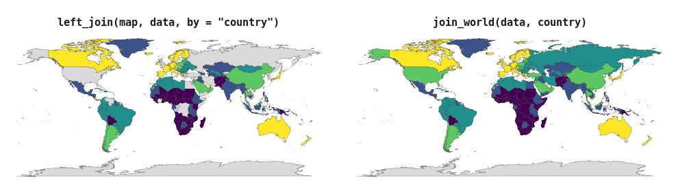
Install
install.packages("countryatlas") # CRAN
pak::pak("PursuitOfDataScience/countryatlas") # developmentThe base install is light. Every heavy spatial dependency (sf, cartogram, leaflet, …) is a Suggests you only need for the feature that uses it.
One call
world_data() fetches the indicator, attaches the geometry and keys the whole thing on iso3c — three worlds (ggplot2 maps, WDI, countrycode) stitched together in one line.
world_map(world_data(2020), gdp_per_capita, style = "quantile")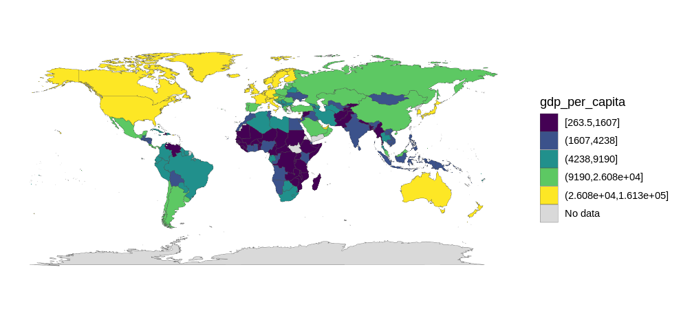
world_data(2020, c(life_exp = "SP.DYN.LE00.IN")) |>
glimpse()
#> Rows: 99,338
#> Columns: 12
#> $ long <dbl> -69.89912, -69.89571, -69.94219, -70.00415, -70.06612, -70.0…
#> $ lat <dbl> 12.45200, 12.42300, 12.43853, 12.50049, 12.54697, 12.59707, …
#> $ group <dbl> 1, 1, 1, 1, 1, 1, 1, 1, 1, 1, 2, 2, 2, 2, 2, 2, 2, 2, 2, 2, …
#> $ order <int> 1, 2, 3, 4, 5, 6, 7, 8, 9, 10, 12, 13, 14, 15, 16, 17, 18, 1…
#> $ subregion <chr> NA, NA, NA, NA, NA, NA, NA, NA, NA, NA, NA, NA, NA, NA, NA, …
#> $ iso3c <chr> "ABW", "ABW", "ABW", "ABW", "ABW", "ABW", "ABW", "ABW", "ABW…
#> $ iso2c <chr> "AW", "AW", "AW", "AW", "AW", "AW", "AW", "AW", "AW", "AW", …
#> $ country <chr> "Aruba", "Aruba", "Aruba", "Aruba", "Aruba", "Aruba", "Aruba…
#> $ continent <chr> "Americas", "Americas", "Americas", "Americas", "Americas", …
#> $ region <chr> "Latin America & Caribbean", "Latin America & Caribbean", "L…
#> $ income <fct> High income, High income, High income, High income, High inc…
#> $ life_exp <dbl> 75.406, 75.406, 75.406, 75.406, 75.406, 75.406, 75.406, 75.4…Geometry, codes, classifications and the indicator, in one frame, ready for world_map().
Drop geometry for a plain country table (country_data()), ask for a year range to get a panel, or pass several indicators at once. wdi_search() finds codes offline; common_indicators keeps the 20 you actually use.
Your data, on the map
Point join_world() at whatever column holds the country and it standardises, joins and attaches geometry in one go.
tibble(
nation = c("U.S.", "S. Korea", "Czechia", "Kosovo", "Cote d'Ivoire", "Burma"),
score = c(10, 8, 6, 4, 7, 5)
) |>
join_world(nation, warn = FALSE) |>
world_map(score, title = "Six countries, six spellings, one map")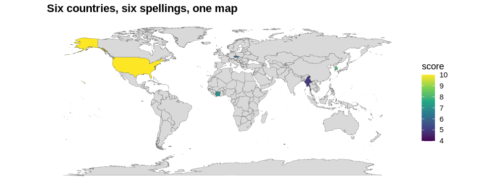
Two messy tables reconcile against each other the same way:
a <- tibble(country = c("Czechia", "South Korea"), gdp = c(1, 2))
b <- tibble(nation = c("Czech Republic", "Korea, Rep."), pop = c(10, 51))
country_join(a, b, country, nation)
#> # A tibble: 2 × 5
#> country gdp iso3c nation pop
#> <chr> <dbl> <chr> <chr> <dbl>
#> 1 Czechia 1 CZE Czech Republic 10
#> 2 South Korea 2 KOR Korea, Rep. 51Nothing goes missing quietly
check_country_match() reports before you join — including the entities countrycode resolves wrongly rather than not at all.
check_country_match(c("USA", "Cote d'Ivoire", "USSR", "Wakanda"))
#> # A tibble: 4 × 5
#> input iso3c matched historical suggestion
#> <chr> <chr> <lgl> <lgl> <chr>
#> 1 USA USA TRUE FALSE <NA>
#> 2 Cote d'Ivoire CIV TRUE FALSE <NA>
#> 3 USSR RUS TRUE TRUE <NA>
#> 4 Wakanda <NA> FALSE FALSE Canadarepair_country_names() fixes typos, audit_coverage() grades a finished join, and dissolve_country() expands a dead state into its successors.
dissolve_country("Yugoslavia")
#> # A tibble: 7 × 5
#> input historical dissolved iso3c country
#> <chr> <chr> <int> <chr> <chr>
#> 1 Yugoslavia Yugoslavia 1992 BIH Bosnia & Herzegovina
#> 2 Yugoslavia Yugoslavia 1992 HRV Croatia
#> 3 Yugoslavia Yugoslavia 1992 MKD North Macedonia
#> 4 Yugoslavia Yugoslavia 1992 MNE Montenegro
#> 5 Yugoslavia Yugoslavia 1992 SRB Serbia
#> 6 Yugoslavia Yugoslavia 1992 SVN Slovenia
#> 7 Yugoslavia Yugoslavia 1992 XKX KosovoThe gallery
Every map below is one function call on the bundled offline snapshot.
|
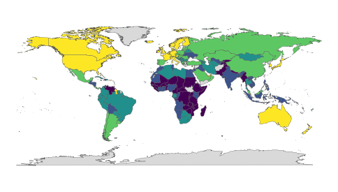 world_map(d, gdp_per_capita, style = “quantile”)
|
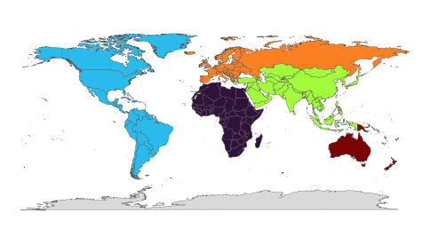 world_map(d, continent, style = “categorical”)
|
|
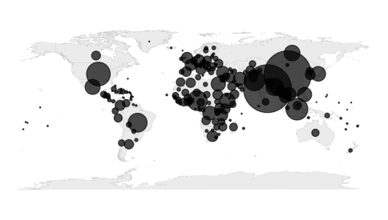 bubble_map(d, population)
|
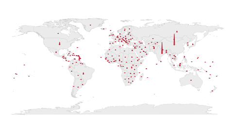 spike_map(d, population)
|
|
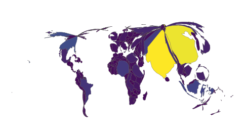 cartogram_map(d, population)
|
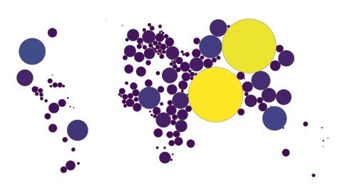 dorling_map(d, population)
|
|
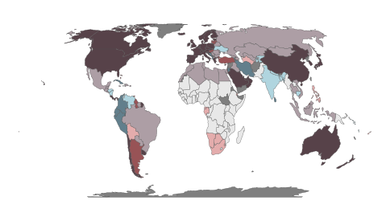 bivariate_map(d, gdp_per_capita, life_expectancy)
|
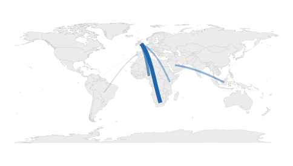 flow_map(corridors, from, to, people)
|
|
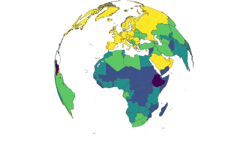 globe_map(d, income, style = “categorical”)
|
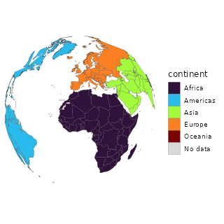 spin_globe(d, continent, style = “categorical”)
|
|
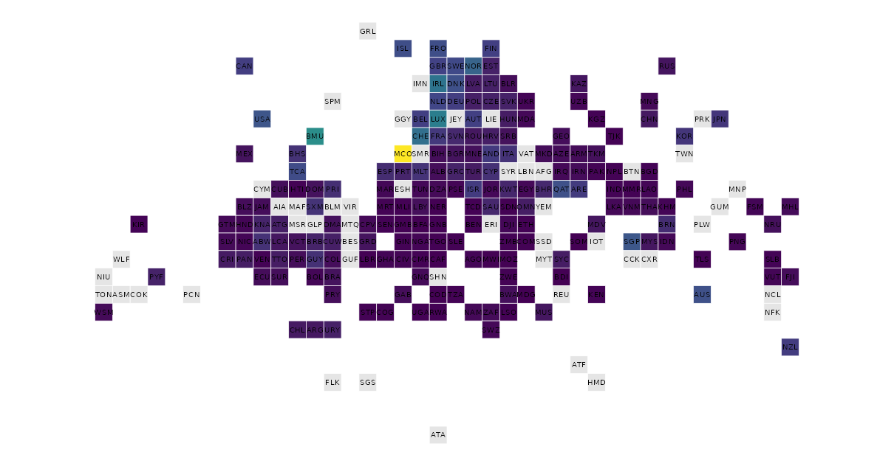 tile_map(d, gdp_per_capita) — one square per country, so microstates are as visible as Russia
|
|
|
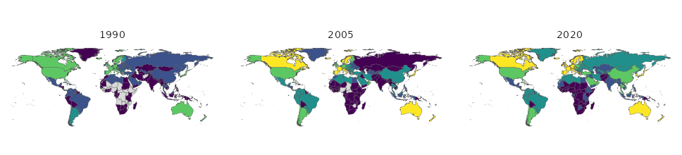 facet_map(panel, life_exp, year, style = “quantile”) — or animate_world(panel, life_exp) for the moving version
|
|
interactive_map() hands the same frame to plotly, ggiraph, leaflet or ggsql for a web-ready widget. With as_ggsql_source() and world_query() the drawing happens inside DuckDB — countryatlas reconciles the countries, ggsql renders them without ggplot2 or sf at runtime.
Honest by construction
“Honest maps” is in the package description, so the package has to earn it. Four ways a world map misleads, the verb for each — and one more that makes the map admit what it did.
Your classification is doing the talking. Equal-interval breaks put 92% of countries in one class here; quantiles spread them evenly. Same data, same palette, opposite conclusions.
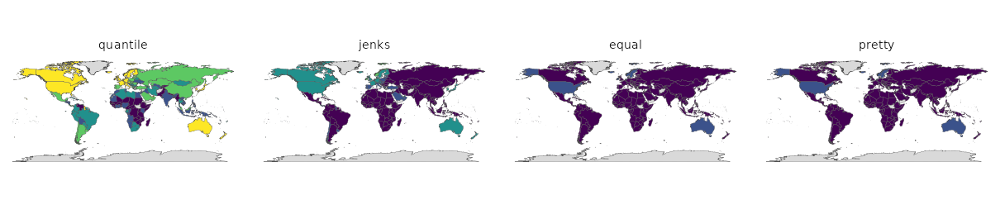
p <- classify_compare(poly, gdp_per_capita)
attr(p, "countryatlas_classification") |> filter(method %in% c("quantile", "equal"))
#> # A tibble: 10 × 4
#> method class n share
#> <chr> <chr> <int> <dbl>
#> 1 quantile [268.7,1662] 38 0.201
#> 2 quantile (1662,4594] 38 0.201
#> 3 quantile (4594,1.029e+04] 37 0.196
#> 4 quantile (1.029e+04,2.937e+04] 38 0.201
#> 5 quantile (2.937e+04,2.472e+05] 38 0.201
#> 6 equal [268.7,4.965e+04] 173 0.915
#> 7 equal (4.965e+04,9.903e+04] 13 0.0688
#> 8 equal (9.903e+04,1.484e+05] 2 0.0106
#> 9 equal (1.484e+05,1.978e+05] 0 0
#> 10 equal (1.978e+05,2.472e+05] 1 0.00529Your projection is doing the talking too. Tissot’s indicatrix puts circles of equal ground radius on the map: whatever the projection does to them, it is doing to your data.
|
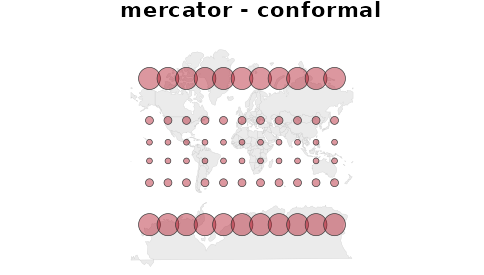 tissot_map(“mercator”) — shapes right, areas wildly wrong
|
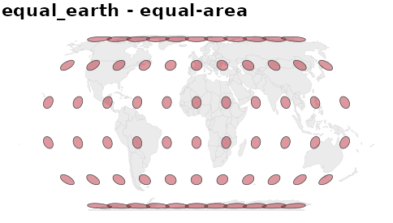 tissot_map(“equal_earth”) — areas right, shapes sheared
|
|
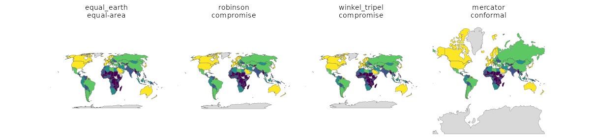 projection_compare(d, gdp_per_capita) — and projection_info() for which of the thirteen are equal-area
|
|
Grey means “no data”, but it reads as “low”. Hatch the gaps so nobody mistakes them for a value, or map availability itself.
|
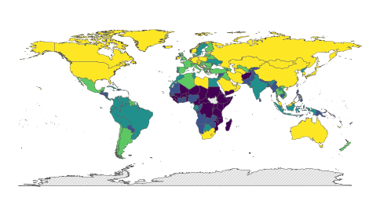 world_map(d, co2_per_capita, na_style = “hatched”)
|
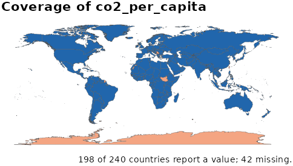 coverage_map(d, co2_per_capita)
|
A rate over eleven thousand people should not shout as loudly as one over a billion. Value-by-alpha spends opacity on the denominator, so small-population countries recede — the cartogram’s answer to the same problem, without distorting the geometry.
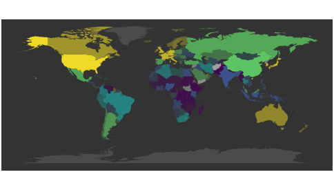
value_by_alpha_map(d, gdp_per_capita, population)And the map should say what it is. footnote = "auto" writes the coverage line; map_provenance() answers the questions a reviewer asks first.
world_map(poly, gdp_per_capita, style = "quantile",
na_style = "hatched", footnote = "auto") |>
map_provenance()
#>
#> ── countryatlas map provenance
#> package: countryatlas 3.0.0 (snapshot 2024)
#> fill: gdp_per_capita
#> geometry: polygon backend, coord_quickmap
#> classification: quantile, 5 bins
#> missing data: hatched
#> coverage: 189 countries shown, 51 missing
#> breaks: 268.7 | 1662 | 4594 | 10290 | 29370 | 247200Other sources, other years, other levels
The ISO spine is not only the World Bank’s, and not only 2024’s.
|
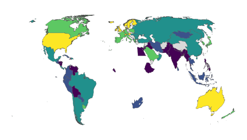 attach_geometry(d, year = 1950) — 1950 borders, via CShapes. Africa is nearly empty because in 1950 almost none of it was sovereign; pass dependencies = TRUE for the colonies.
|
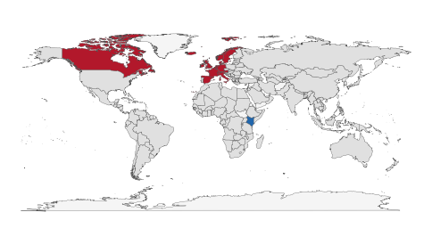 lisa_map(d, gdp_per_capita, weights = country_weights(“knn”))
|
|
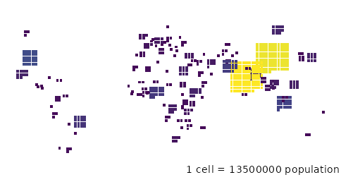 gridded_cartogram(d, population) — one cell per N people, countable
|
value_by_alpha_map(d, gdp_per_capita, population)
|
|
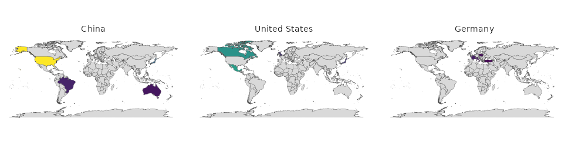 od_map(flows, from, to, value) — where each origin sends, when flow_map() would be spaghetti
|
|
Membership is a function of time, and a snapshot quietly misstates any panel that spans an accession:
c(`2016` = in_group("United Kingdom", "EU", as_of = 2016),
`2021` = in_group("United Kingdom", "EU", as_of = 2021))
#> 2016 2021
#> TRUE FALSEIslands have no land border, so the default contiguity weights drop a quarter of the world from a “global” Moran’s I. country_weights() fixes it, and the result says how many it dropped either way:
snap <- world_snapshot$countries
cols <- c("i", "n", "n_excluded")
rbind(
cbind(scheme = "contiguity",
morans_i(snap, gdp_per_capita, n_perm = 0)[cols]),
cbind(scheme = "knn",
morans_i(snap, gdp_per_capita, n_perm = 0,
weights = country_weights("knn", k = 5))[cols])
)
#> scheme i n n_excluded
#> 1 contiguity 0.6073182 142 49
#> 2 knn 0.4720522 189 2Any provider, one shape. register_country_source() takes a fetch function and a name; fetch_indicator() and compare_sources() do the rest — including telling you where two providers disagree.
country_sources()[, c("source", "meta")]
#> # A tibble: 5 × 2
#> source meta
#> <chr> <chr>
#> 1 comtrade UN Comtrade bilateral trade (via comtradr); needs an API token
#> 2 eurostat Eurostat (via eurostat); European coverage only
#> 3 oecd OECD statistics (via OECD)
#> 4 owid Our World in Data (via owidR)
#> 5 wdi World Bank World Development Indicators (via WDI)Beyond the map
snap <- world_snapshot$countries
# inequality between people, not between country units
gini(snap$gdp_per_capita, weights = snap$population)
#> [1] 0.6094909
# how much of it sits between continents rather than within them
theil(snap$gdp_per_capita, weights = snap$population, groups = snap$continent)
#> # A tibble: 3 × 3
#> component value share
#> <chr> <dbl> <dbl>
#> 1 total 0.678 1
#> 2 between 0.310 0.458
#> 3 within 0.368 0.542
# who borders whom, and how far apart they are -- no sf required
distance_between("France", "Germany")
#> [1] 802.3524
convert_country(c("Japan", "Brazil"), to = "flag")
#> [1] "🇯🇵" "🇧🇷"Offline by default
world_snapshot ships a curated indicator set for one recent year, so every example, test and vignette in the package runs with the network unplugged. Live world_data() calls are memoised on disk between sessions.
Which optional package does what
| Needs | For |
|---|---|
maps |
the polygon backend: world_map(), bubble_map(), spike_map(), flow_map(), globe_map(backend = "polygon") (with mapproj) |
sf + rnaturalearth + rnaturalearthdata
|
real geometry: world_map(sf), world_geometry(sf), locate_country(), country_borders(), neighbors(), morans_i()
|
cartogram + sf
|
cartogram_map(), dorling_map()
|
biscale + sf
|
bivariate_map() |
gganimate + gifski or magick
|
animate_world(), spin_globe()
|
cartogramR |
cartogram_map(type = "flow"), the fast Gastner-Seguy-More algorithm |
cshapes |
historical_geometry() and attach_geometry(year=)
|
owidR / eurostat / OECD / comtradr
|
the four built-in fetch_*() source adapters |
mapgl |
interactive_map(engine = "mapgl"), globe_map(interactive = TRUE)
|
tmap |
world_map(engine = "tmap") |
giscoR / regions
|
nuts_geometry(), standardize_subnational()
|
gt |
world_table() |
ggpattern |
world_map(na_style = "hatched") |
plotly / ggiraph / leaflet / ggsql
|
the four interactive_map() engines |
duckdb + DBI, or nanoarrow
|
as_ggsql_source() |
stringdist |
fuzzy matching in repair_country_names() and check_country_match()
|
rmapshaper |
the better simplifier behind simplify_geometry()
|
classInt |
style = "jenks" |